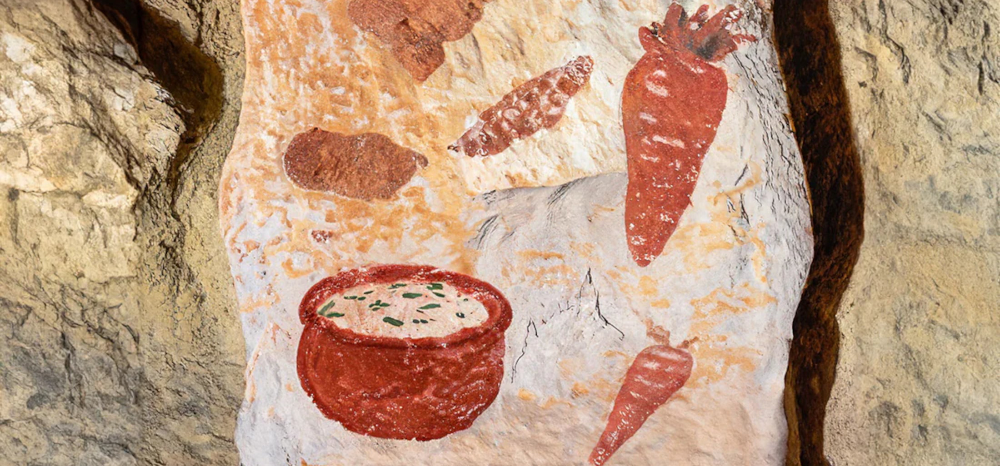
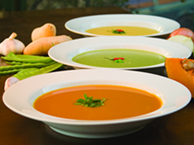
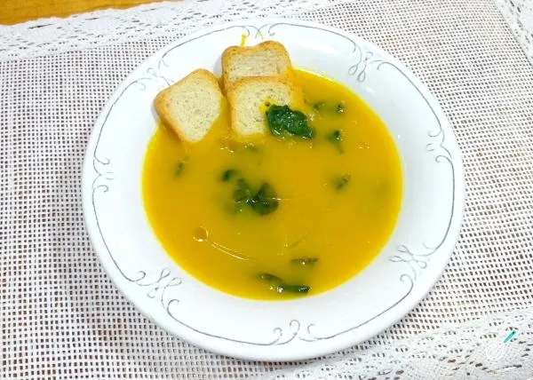
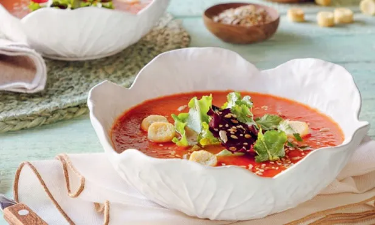
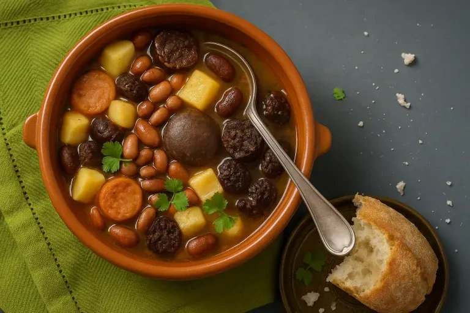
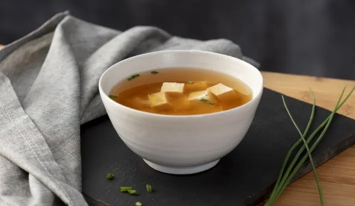
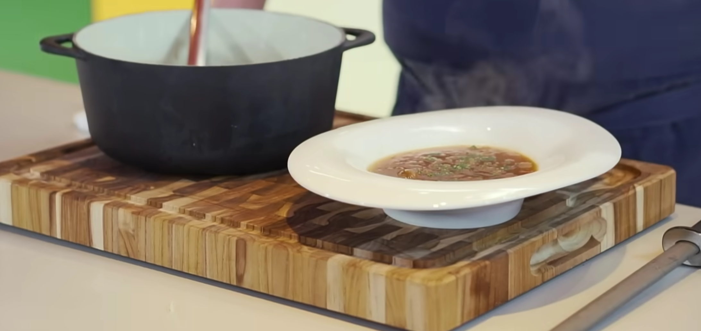
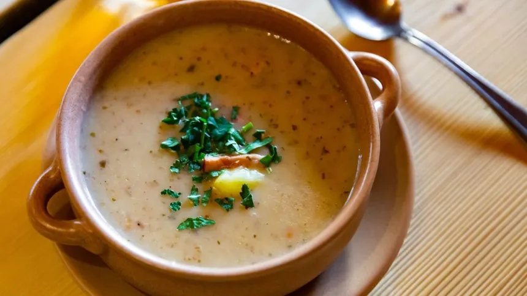

Bem vindo ao SoupWorld
Descubra os tipos e as principais receitas de sopas do
mundo.

Tipos

Sopas ralas
Caldos leves e consommés — líquidos transparentes feitos pelo cozimento lento de carnes, legumes ou ossos. São a base de muitas culinárias do mundo, reconfortantes e de fácil digestão.

Sopas espessas
Engrossadas com creme de leite, farinha, amido ou pelos próprios ingredientes batidos. Têm textura aveludada e sabor mais encorpado que os caldos. O creme de abóbora, o creme de espinafre e o vichyssoise francês são exemplos clássicos, servidas quentes ou frias dependendo da receita.

Sopas frias
Servidas geladas, são refrescantes e muito populares no verão. O gazpacho espanhol, feito de tomates crus, pepino e pimentão, é o representante mais famoso dessa categoria.

Sopas nacionais
Toda cultura tem sua sopa símbolo, receitas passadas de geração em geração que representam a identidade de um povo. O pho vietnamita, o ramen japonês, o borscht ucraniano e a sopa da pedra portuguesa são exemplos de pratos que vão muito além da alimentação e carregam história.
Principais receitas!

Lista de ingredientes
- 1 Bardana
- 7 Cm de nabo
- 1 Cebola
- 1 Alho-poró
- 1 Cenoura média
- 1 acelga chinesa (ou normal, ou repolho)
- Um fio de óleo
- 2 col. chá de alho moído
- 800 ml de água
- 3 col. sopa de missô (branco ou vermelho)
- 2 col. sopa de dashi de peixe bonito
- 2 col. chá de pasta de pimenta coreana (opcional)
- Sal a gosto
Modo de preparo
- 1- Refogar o alho no óleo por 1 min em fogo médio.
- 2- Adicionar cebola, cenoura, nabo, bardana, alho-poró e acelga.
- 3- Adicionar os 800 ml de água.
- 4- Dissolver o missô com uma peneira diretamente na panela.
- 5- Adicionar o dashi e a pasta de pimenta
- 6- Ferver por ~17 min ou até os legumes ficarem al dente
- 7- Experimentar e ajustar sal/missô
Lista de ingredientes
- 160 gramas de macarrão
- Fio de óleo
- 1 Cebola picada
- 1 Cenoura em cubos
- 2 Xícaras (chá) de abóbora picada
- 1 Abobrinha
- 2 Batatas em cubos
- Sal a gosto
- Pimenta-do-reino a gosto
- 2 Litros de água
- Salsa picada
Modo de preparo
- 1- Coloque em uma panela o óleo, a cebola e a cenoura. Refogue.
- 2- Junte a abóbora, a abobrinha e a batata.
- 3- Tempere com sal e pimenta. Cubra com água e deixe cozinhar por 15 minutos.
- 4- Junte o macarrão, deixe ferver até ficar al dente.
- 5- Finalize com salsa picada.

Lista de ingredientes
- 6 cebolas grandes
- 60 gramas manteiga
- 1 colher de sopa de farinha de trigo
- 800ml de água
- 0.5 xícara de vinho branco seco (opcional)
- 1 colher de chá de sal
- 0.3 colher de chá de pimenta branca ou cinza
- 2 folhas de louro (opcional)
- 2 ramos de tomilho (opcional)
- 4 colheres de sopa de queijo ralado para servir
- 1 colher de sopa de cebolinha picada para servir
Modo de preparo
- 1- Fatie as cebolas: Fatie 6 cebolas grandes em meias-luas finas com faca afiada — nunca no processador.
- 2- Inicie o cozimento: Derreta 4 colheres de sopa de manteiga na panela e junte as cebolas, 1 colher de chá de sal, 0.3 colher de chá de pimenta, 2 folhas de louro (opcional) e 2 ramos de tomilho (opcional).
- 3- Caramelize: Cozinhe tampado em fogo baixo, mexendo a cada 90 minutes, até dourar bem.
- 4- Adicione a farinha: Junte 1 colher de sopa de farinha de trigo e mexa por 2 minutos até cozinhar a farinha.
- 5- Deglace: Adicione 0.5 xícara de vinho branco seco (opcional) e raspe o fundo até evaporar o álcool.
- 6- Cozinhe a sopa: Acrescente 4 xícaras de água e cozinhe em fogo baixo por 45 minutos a 1 hora.
- 7- Sirva: Sirva nas tigelas com 4 colheres de sopa de queijo ralado ralado e 1 colher de sopa de cebolinha picada por cima.

Lista de ingredientes
- 50 ml de azeite de oliva
- 500 g de alcatra picada em cubos
- 6 batatas (1 kg) cortado em cubos
- 1 cenoura grande em cubos
- 1 cebola grande em cubos
- 2 folhas de louro
- 100 ml de conhaque
- 2 colheres de extrato de tomate
- 4 colheres de molho inglês
- 2 colheres de mostarda
- 3 colheres de ketchup
- Sal e pimenta
- 300 ml de creme de leite fresco
- 1,5 litro de caldo de carne
- Salsinha à gosto
- Queijo parmesão à gosto
Modo de preparo
- 1- Aqueça a panela e adicione o azeite
- 2- Coloque a carne, tempere com sal e pimenta e doure mexendo de vez em quando
- 3- Junte a cebola e refogue por 5 a 8 minutos
- 4- Adicione o conhaque e deixe flambar
- 5- Após o fogo apagar, adicione o louro, extrato de tomate, ketchup e mostarda, cozinhe por 2 minutos
- 6- Adicione o molho inglês e cozinhe por mais 2 minutos
- 7- Junte a cenoura e a batata, mexa bem e adicione o caldo
- 8- Cozinhe em fogo médio até as batatas ficarem bem macia
- 9- (Opcional) Retire parte das batatas, amasse ou bata no liquidificador e volte à panela, cozinhe por mais 5 minutos
- 10- Ajuste o sal e a pimenta
- 11- Sirva com torradas, salsinha, queijo parmesão e azeite